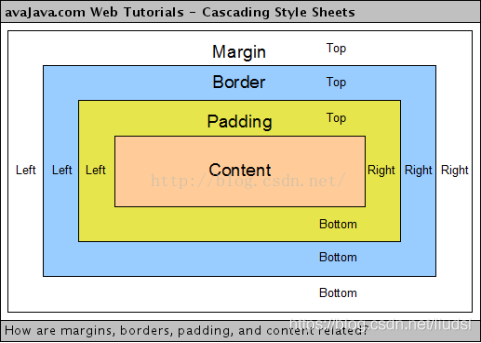
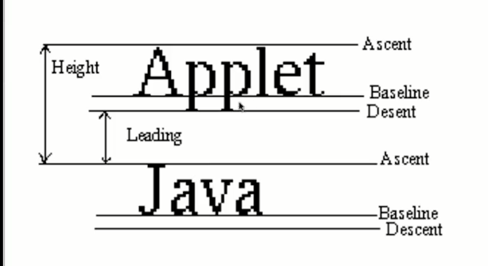
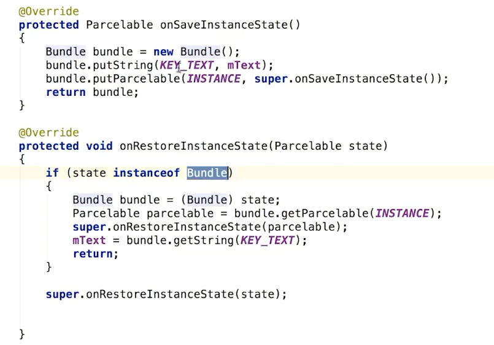
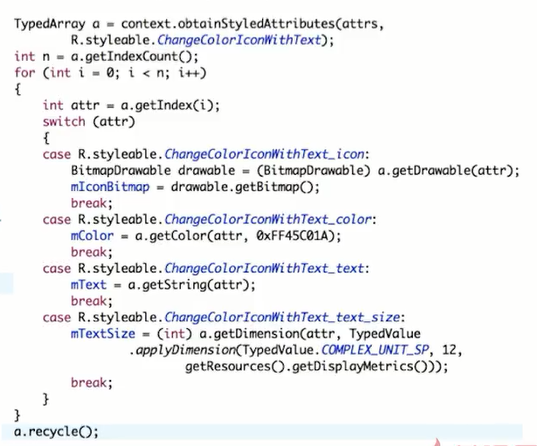

View
通用属性

LayoutInflater
LayoutInflater inflate() 方法用于动态加载布局，将 XML 布局文件实例化为其对应的 View 对象。
//resource(int): 需要加载的 XML 布局资源的 ID
//root(ViewGroup): 设置加载的布局的父级层次结构
//attachToRoot(boolean): 是否将加载的布局附加到父级层次结构
// 方法一
public View inflate(int resource, ViewGroup root)
// 方法二
public View inflate(int resource, ViewGroup root, boolean attachToRoot)
情况一： root 为 null；
如果 root 为 null，attachToRoot 参数将失去意义。
无需将 resource 指定的布局添加到 root 中，同时没有任何 ViewGroup 容器来协助 resource 指定的布局的根元素生成布局参数 LayoutParams。
情况二： root 不为 null，attachToRoot 为 true；
将 resource 指定的布局添加到 root 中，inflate() 方法返回结合后的 View，其根元素是 root。View 将会根据它的父 ViewGroup 容器的 LayoutParams 进行测量和放置。
使用方法一即未设置 attachToRoot 参数时，如果 root 不为 null，attachToRoot 参数默认为true。
情况三： root 不为 null，attachToRoot 为 false；
无需将 resource 指定的布局添加到 root 中，inflate() 方法返回 resource 指定的布局 View，根元素是自身的最外层，View 不存在父 ViewGroup，但是可以根据 root 的 LayoutParams 进行测量和放置。
情况三不解之处在于，既然 attachToRoot 为 false，无需将 resource 指定的布局添加到 root 中，那么为什么 root 仍然不为 null？创建的 View 必然包含 layout 属性，但是这些属性需要在 ViewGroup 容器中才能生效，根据 ViewGroup 容器的 LayoutParams 进行测量和放置 View。
情况三的意思是，无需将 View 添加到某个 ViewGroup 容器中，却又能根据这个 ViewGroup 容器的 LayoutParams 进行测量和放置 View。
情况一和情况三依赖手动添加 View。
LayoutParams
先来看看LayoutParams的解释: LayoutParams继承于Android.View.ViewGroup.LayoutParams.
LayoutParams相当于一个Layout的信息包，它封装了Layout的位置、高、宽等信息。假设在屏幕上一块区域是由一个Layout占领的，如果将一个View添加到一个Layout中，最好告诉Layout用户期望的布局方式，也就是将一个认可的layoutParams传递进去。
但LayoutParams类也只是简单的描述了宽高，宽和高都可以设置成三种值：
- 一个确定的值；
- MATH_PARENT，即填满（和父容器一样大小）；
- WRAP_CONTENT，即包裹住组件就好。
如果某View被LinearLayout包含，则该View的setLayoutParams参数类型必须是LinearLayout.LayoutParams。
视图绘制流程
onMeasure() 决定 View 的大小
onLayout() 决定 View 在 ViewGroup 中的位置
onDraw() 绘制 View
onMeasure()
视图大小的测量过程，是由父视图、布局文件、以及视图本身共同完成的。
父视图提供参考大小（MeasureSpec: specSize, specMode）给子视图
UNSPECIFIED：子视图按照自身条件设置成任意的大小，没有限制
EXACTLY：父视图希望子视图的大小应该由 specSize 来决定，指定大小或MATCH_PARENT
AT_MOST： 子视图最大只能是 specSize 中指定的大小，对应WRAP_CONTENT
布局文件中指定视图的大小
MATCH_PARENT
WRAP_CONTENT
视图本身最终决定大小
onLayout()
根据测量出来的（onMeasure()）宽度和高度确定视图的位置。关键方法：public void layout (int l, int t, int r, int b) 方法接收左、上、右、下的坐标。
onDraw()
完成测量（onMeasure()）和布局操作（onLayout()）之后，创建 Canvas 对象绘制视图。
事件分发机制
dispatchTouchEvent()
onInterceptTouchEvent()
onTouchEvent()
事件分发顺序：由 Activity 开始先传递给 ViewGroup 再传递给 View。
Activity 层面
事件分发始于 Activity.dispatchTouchEvent() 方法，传递事件至 Window 的根视图。
若最终没有视图消费事件则调用 Activity.onTouchEvent(event) 方法。
ViewGroup 层面
ViewGroup 中可以通过 ViewGroup.onInterceptTouchEvent() 方法拦截事件传递，返回 true 代表同一事件列不再向下传递给子 View，返回 false 代表事件继续传递，默认返回 false。
事件递归传递至子 View 的 View.dispatchTouchEvent() 方法，如果事件被子 View 消费，则返回 true，ViewGroup 将无法再处理事件。
如果没有子 View 消费事件则判断 ViewGroup 中是否存在已注册的事件监听器（mOnTouchListener），存在则调用它的 ViewGroup.OnTouchListener.onTouch() 方法，如果 onTouch() 方法返回 false 即未消费事件，则进一步去执行 ViewGroup.onTouchEvent(event) 方法。
View 层面
View.dispatchTouchEvent() 方法：首先判断 View 中是否存在已注册的事件监听器（mOnTouchListener），存在则调用它的 View.OnTouchListener.onTouch() 方法，如若 onTouch() 方法返回 false 即未消费事件，则进一步去执行 View.onTouchEvent(event) 方法。
View 可以注册事件监听器（Listener）实现 onClick(View v)、onTouch(View v, MotionEvent event) 方法。相比 onClick() 方法，onTouch() 方法能够做的事情更多，判断手指按下、抬起、移动等事件。同时注册两者事件传递顺序，onTouch() 方法将会先于 onClick() 方法执行，并且 onTouch() 方法可能执行多次（MotionEvent 事件：ACTION_DOWN、ACTION_UP、ACTION_MOVE）。如若设置 onTouch() 方法返回值为 true，事件视为被 onTouch() 方法消费，不再继续向下传递给 onClick() 方法。
布局性能优化
优化布局层级
每个控件和布局都需要经过初始化、布局、绘制过程才能呈现出来。当使用多层嵌套的 LinearLayout 以致产生较深的视图层级结构，更甚者在 LinearLayout 中使用 layout_weight 参数，导致子 View 需要两次 onMeasure() 过程。如此反复执行初始化、布局、绘制过程容易造成性能问题。
需要开发者检查布局、修正布局，可以借助 Lint 工具发现布局文件中的视图层级结构里值得优化的地方，同时扁平化处理原本多层嵌套的布局，例如使用 RelativeLayout 作为根节点。
使用
通过使用
画笔&字体
//基本方法
reset();
重置画笔 ，即这个操作会把画笔之前设置的属性全改成默认 比如颜色会变成黑色，无抗锯齿，等等；
setColor(int color);
给画笔设置颜色值 ，int color 的值大家熟悉的是#FFFFFFFF这样的值，但在代码里这样的值是不被使用的必须转过来通过什么工具类我没研究过，但是有更方便的方法。就是关于色彩的理论，带#号的颜色表示方法 其实就是32位argb的表示方案，然而 setColor中我们需要传入的值显然是这个个32位的int值，所以 现在里面我们毋庸置疑的把#改成0x其他不变就好啦；实践证明我的方法是正确的；关于色彩理论我这也讲不明白，想深入研究的可以自行百度谷歌；
setARGB(int a,int r.int g,int b);
同样是设置颜色，不过是把argb分开设置，同样的每个参数还可以用十六进制的int值来传入，比如红色 #FFFF0000 就可以传入，setARGB(0xFF,0xFF,0x00,0x00)，同理也可以用十进制的来传入，setARGB(255,255,0,0)
setAlpha(int a);
设置画笔的透明度
setStyle(Paint.Style s);
设置画笔的样式， 样式取值 有三种: Paint.Style.FILL :填充内部
- Paint.Style.FILL_AND_STROKE ：填充内部和描边
- Paint.Style.STROKE ：仅描边
- setStrokeWidth(float w)：设置画笔描边粗细宽度
- setAntAlias(boolean b)：设置是否抗锯齿
其他方法
setStrokeCap(Paint.Cap cap)
设置画笔线帽的样式 取值有三种 Cap.ROUND 圆形线帽，Cap.SQUARE 方形线帽，Cap.BUTT 无线帽
setStrokeJoin(Paint.Join j);
设置线段连接处的连接模式，取值有：Join.MITER（结合处为锐角）、Join.Round(结合处为圆弧)、Join.BEVEL(结合处为直线)
setStrokeMiter(float miter);
设置笔画的倾斜度，90度拿画笔与30拿画笔，画出来的线条样式肯定是不一样的吧。（事实证明，根本看不出来什么区别好吗……囧……）
setPathEffect(PathEffect effect);
设置路径样式;取值类型是所有派生自PathEffect的子类：ComposePathEffect, CornerPathEffect, DashPathEffect, DiscretePathEffect, PathDashPathEffect, SumPathEffect这四个函数中，setStrokeMiter(float miter)就不再讲了，我做过试验，没什么变化，也就是没啥屌用……，
//字体相关
setTextSize(float textSize);
//设置文字大小
setFakeBoldText(boolean fakeBoldText);
//设置是否为粗体文字
setStrikeThruText(boolean strikeThruText);
//设置带有删除线效果
setUnderlineText(boolean underlineText);
//设置下划线
setTextAlign(Paint.Align align);
//设置开始绘图点位置
setTextScaleX(float scaleX);
//水平拉伸设置
setTextSkewX(float skewX);
//设置字体水平倾斜度，普通斜体字是-0.25，可见往右斜
setTypeface(Typeface typeface);
//字体样式

状态的存储与恢复

需要视图设置id
自定义属性
①在资源文件中配置标签属性
在资源文件res/values/attrs.xml中增加 declare-styleable 节点，name为自定义控件名字；如下
<resources>
<declare-styleable name="CustomerView">
//项目中资源id
<attr name="background" format="reference" />
<attr name="src" format="reference" />
//颜色
<attr name = "textColor" format = "color" />
//布尔值
<attr name = "focusable" format = "boolean" />
//尺寸值 dp，sp，px等
<attr name = "width" format = "dimension" />
//字符串
<attr name = "textStr" format = "string" />
//枚举值
<attr name="orientation">
<enum name="horizontal" value="0" />
<enum name="vertical" value="1" />
</attr>
</declare-styleable>
</resources>
其中子节点attr中的name值backound、src、textColor、focusable、width、textStr均为范例，自己写的时候自定义属性名称
②xml布局文件的控件中引用自己定义的属性
引入app的命名空间，自定义属性以"app:"为前缀
<layout xmlns:app="http://schemas.android.com/apk/res-auto">
<com.example.weiget.CustomerView
app:textStr="@string/app_name"
app:background="@string/app_name"
android:src="@drawable/compile"
android:layout_width="match_parent"
android:layout_height="match_parent"/>
</layout>
③项目中自定义属性和布局文件中的属性值都配置好了，如何在自定义控件文件中拿到配置的参数呢；如
public class CustomerView extends AppCompatImageView {
public CustomerView(Context context) {
super(context);
init(context,null);
}
public CustomerView(Context context, AttributeSet attrs) {
super(context, attrs);
init(context,attrs);
}
public CustomerView(Context context, AttributeSet attrs, int defStyleAttr) {
super(context, attrs, defStyleAttr);
init(context,attrs);
}
private void init(Context context, AttributeSet attrs) {
if(attrs != null) {
//从项目style中文件中取出样式数组
TypedArray typedArray = context.obtainStyledAttributes(attrs, R.styleable.CustomerView);
//取到xml布局文件中配置的资源文件
Drawable drawable = typedArray.getDrawable(R.styleable.CustomerView_src);
//字符串
String string = typedArray.getString(R.styleable.CustomerView_textStr);
//布尔值
boolean aBoolean = typedArray.getBoolean(R.styleable.CustomerView_focusable, false);
}
}
}
从typeArray数组中取值的参数，其中参数命门规则为R.styleable.控件名_属性名
只会获取用户设定的值，不会造成成员变量的覆盖
